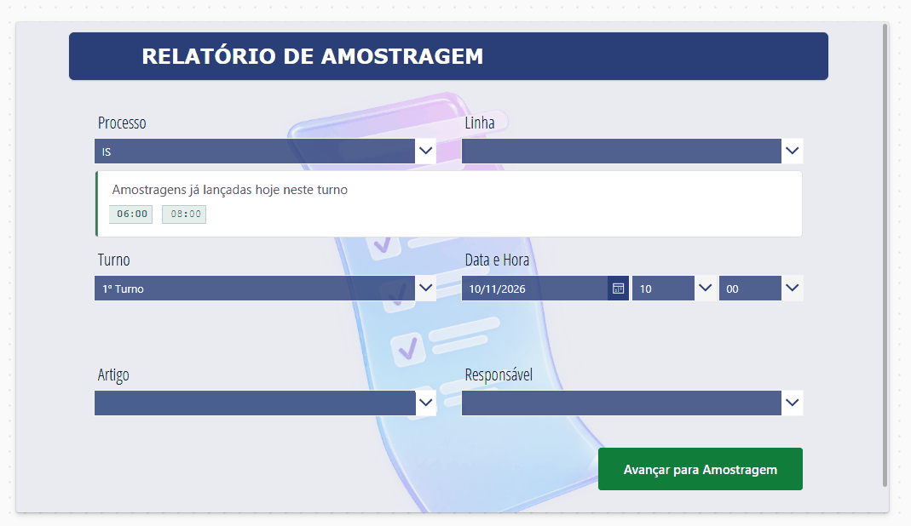
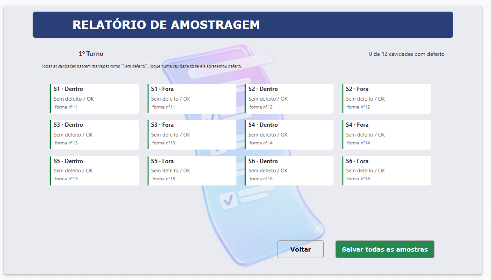
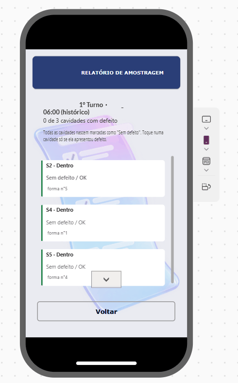
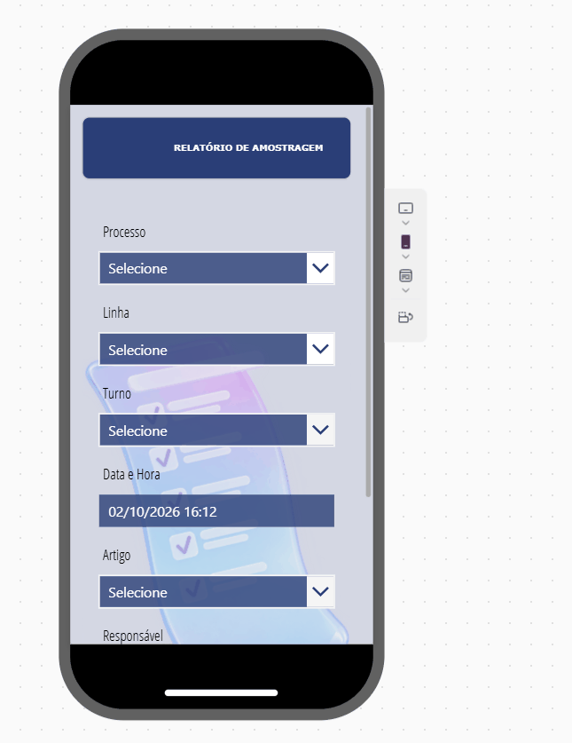

Overview
Several times per shift, an operator inspects the pieces coming out of each cavity of a forming machine and records which ones show a defect. This app turns that inspection into a two-screen flow: a guided start screen (process → line → shift → products → person → time) and a sampling screen with one card per cavity. Every cavity starts as "no defect", so the operator only touches the defective ones. On save, the app validates the sample and writes one row per product to a SharePoint list.
Context and problem
Sampling was recorded by hand on forms, then transcribed. It was slow, inconsistent between shifts and operators, and hard to analyze: the same cavity, mold or product could be written in different ways, and night-shift samples were often filed under the wrong date. Quality needed per-shift, per-machine data they could trust and aggregate.
My role
I designed the flow with the quality team, built both screens and all the Power Fx logic, modeled the SharePoint lists (samples, defect types, lines and products), and made the layout responsive so the same app runs on the tablets at the lines, on desktops in the quality office and on phones.
Architecture
Data flow in short
- Start screen: selectors cascade (process filters lines, line filters products). The samples already logged for this line and shift appear as time chips; tapping one reopens that sample read-only.
- Opening the sampling screen: the app reads the most recent sample on the same line and process, and builds the cavity collection from the number of sections of that machine type, pre-filling each section's product and mold number.
- Save: four validations run in order; if all pass, the app writes one row per product (each row carries only that product's cavities) inside an error handler, then returns to the start screen.
Key features
Guided start with shift history
Process, line, shift, products, responsible person and time. The "advance" button only enables when every field is valid and at most six products are selected. Samples already logged in this shift show as time chips, so the operator sees at a glance what is done.

Tap only the defects
One card per cavity, grouped by section and side (inner / outer). All cards start as "no defect / OK" with the inherited mold number. Tapping a card opens a small panel to pick the defect type, correct the mold number and add a note. A live counter shows how many cavities have a defect.

Smart defaults and multiple products
Each section inherits the product and mold number from the last sample on that line. When a machine runs more than one product, each section can be assigned to one of them; changing a section re-applies the right mold numbers and the save rules require every section to have a product and every product at least one section.

Same app on tablet, desktop and phone
Responsive containers reflow the selectors into one column on phones and keep the cavity grid readable on tablets. Button widths, positions and font sizes follow the container width.

Technical highlights
Snippets are rewritten with generic names; they show the logic, not the production code.
Night shift crossing midnight
The third shift starts in the evening and ends the next morning. Before 07:00, "today's" night shift actually started yesterday. The chip list computes the shift date and then matches samples by two date prefixes: late hours of the shift date and early hours of the next day.
With({
isNight: StartsWith(ddShift.Selected.Name, "3"),
shiftDate: If(StartsWith(ddShift.Selected.Name, "3") && Hour(Now()) < 7,
DateAdd(Today(), -1, TimeUnit.Days), Today())
},
Filter(colShiftSamples,
If(isNight,
StartsWith(DateTimeText, Text(shiftDate, "dd/mm/yyyy") & " 2") // 20:00–23:59
|| StartsWith(DateTimeText, Text(DateAdd(shiftDate, 1, TimeUnit.Days), "dd/mm/yyyy") & " 0"), // 00:00–09:59
StartsWith(DateTimeText, Text(shiftDate, "dd/mm/yyyy"))
)
)
)Inheriting the last sample's settings
When the sampling screen opens, the app looks up the latest record for the same line and process, expands its section columns into a small table (section → product → mold number), and uses it to pre-fill the grid. Operators change only what changed.
// Latest sample on this line and process
Set(varLastTime, First(Sort(Filter(Samples, Line = varLine, Process = varProcess), ID, SortOrder.Descending)).DateTimeText);
// One row per section from that sample: {Product, Section, MoldNumber}
ClearCollect(colLastMolds,
ForAll(Filter(Samples, Line = varLine, Process = varProcess, DateTimeText = varLastTime) As r,
Table({Product: r.Product, Section: "S1 · Inner", Mold: r.Mold1Inner},
{Product: r.Product, Section: "S1 · Outer", Mold: r.Mold1Outer}, ...)));
// Build the grid: sections × 2 sides, pre-filled from colLastMolds
ClearCollect(colCavities,
ForAll(Sequence(varSections * 2) As c,
With({n: RoundUp(c.Value / 2, 0), side: If(Mod(c.Value, 2) = 1, "Inner", "Outer")},
{Section: n, Side: side, Defect: "No defect / OK",
Product: LookUp(colLastMolds, Section = "S" & n & " · Inner").Product,
Mold: Coalesce(LookUp(colLastMolds, Section = "S" & n & " · " & side).Mold, Text(10 + n))})));Validation chain before saving
Save runs four checks in order and stops at the first failure with a specific message: required date and time; every section has a product (multi-product only); every selected product has at least one section; and no sample already exists for this line at this date and time. Only then does it write, inside an error handler, one row per product.
If(
IsBlank(dpDate.SelectedDate) || IsBlank(ddHour.Selected.Value),
Notify("Fill in the date and time.", NotificationType.Warning),
varMultiProduct && !IsEmpty(Filter(colCavities, Side = "Inner" && IsBlank(Product))),
Notify("Assign a product to every section.", NotificationType.Warning),
!IsEmpty(Filter(colProducts As p, IsEmpty(Filter(colCavities, Active && Product = p.Name)))),
Notify("Each product needs at least one section.", NotificationType.Warning),
!IsBlank(LookUp(Samples, Line = varLine && DateTimeText = varDateTime)),
Notify("A sample already exists for this line at this time.", NotificationType.Error),
IfError(
ForAll(colProducts As p, Patch(Samples, Defaults(Samples), { /* this product's cavities */ })),
Notify("Could not save: " & FirstError.Message, NotificationType.Error),
Notify("Saved.", NotificationType.Success); Navigate(StartScreen)
)
)Grid generated from the machine type
Machine types have six or eight sections, and on one line the outer cavity does not exist for single-gob products. The grid is generated with Sequence(sections × 2) and an Active flag per cavity, so the same screen serves every machine without duplicated layouts.
Challenges and how I solved them
Challenge
Operators work fast, with gloves, on a tablet at the line. Filling 12–16 cavity fields per sample was not realistic.
Solution
Every cavity defaults to "no defect" with inherited mold numbers; the operator taps only the defective ones. A typical clean sample is three taps.
Challenge
Night-shift samples were filed under the wrong date, so the shift history looked empty after midnight.
Solution
The shift date is derived from the shift and the current hour, and history is matched across two calendar days.
Challenge
Some machines run two or more products at once, which a single-product form could not represent.
Solution
Products are assigned per section, color-coded in the grid, and saved as one row per product. The rules guarantee every section and every product are covered.
Challenge
Duplicate and incomplete samples polluted the data.
Solution
A validation chain with specific messages, a duplicate check on line + time, and a write wrapped in an error handler.
Results
- Manual sampling records replaced by a guided digital form on the line.
- Consistent, structured records per shift, line, product and cavity, ready for reporting.
- Validation rules stop duplicate and incomplete samples before they are saved.
- One app for tablets, desktops and phones.
Tools
- Power Apps (canvas)
- Power Fx
- Collections
- Responsive containers
- Galleries
- SharePoint lists